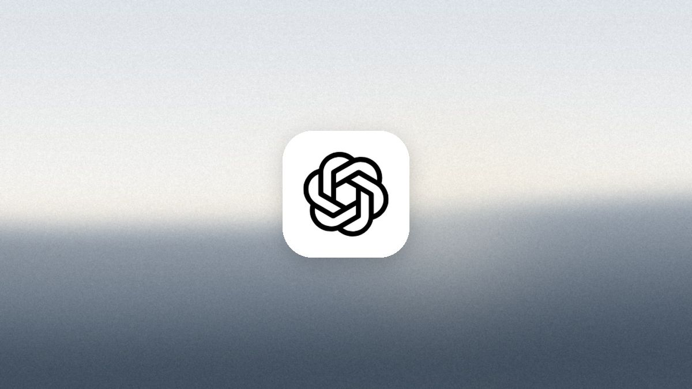
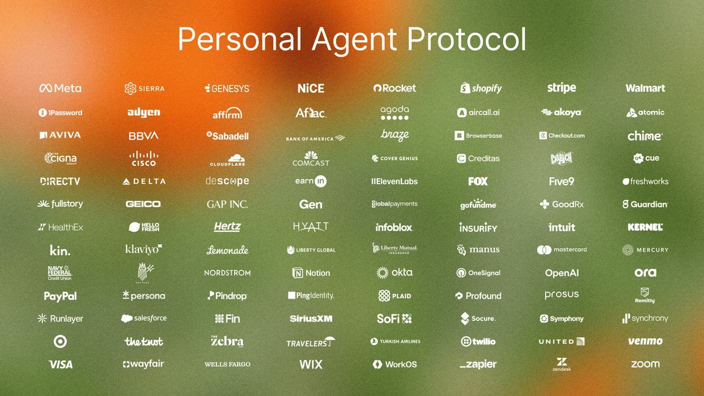
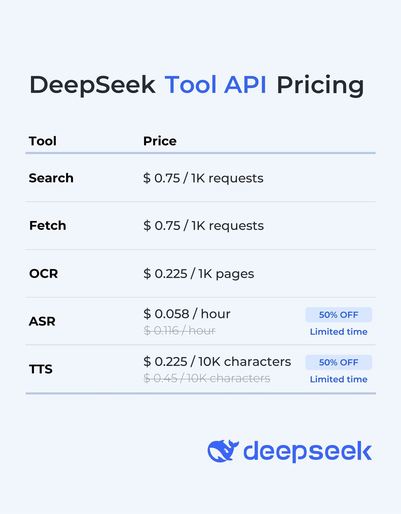
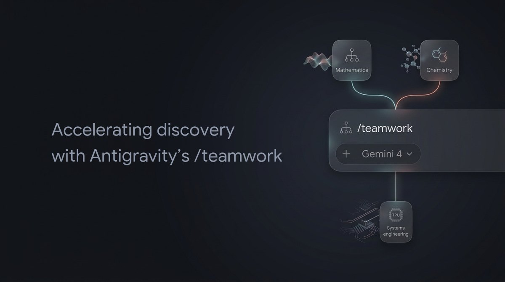

AI
Brief
Friday edition
ChatGPT's agents can now check out and pay for you
Also: a standard for letting personal agents into stores, DeepSeek sells its app's tools, Google's agent teams take on open problems, and Copilot retires six models.
What matters today

Agents that pay
OpenAI gives ChatGPT's agents a wallet.
- How it works: agents in ChatGPT Work, Codex and dots buy with a saved card. The user checks the items, total and card, then approves with Face ID or a fingerprint.
- Limited launch: some US Pro users, 18 and over, with a US Visa, Mastercard or Amex. A stand-in token pays, so neither agent nor store sees the card. Spending limits are planned.
Why it mattersFinding products was never the hard part of agent shopping; trust at checkout was. OpenAI now owns that step, so stores that want sales from agents will build for its checkout, with its rules.

A front door for agents
Sierra releases version 1.0 of Poppy, a standard for personal agents.
- What it does: tells a visiting agent what a company allows, built on MCP, OpenAPI and sign-in through OAuth, so customers control what their agent can do.
- Live: every Shopify store now publishes a Poppy file, and Meta's Muse looks for one first on every site. More than 100 companies are design partners, including Salesforce and Zoom.
Why it mattersPersonal agents are getting an official way in. A company that publishes the file decides what agents may do on its behalf; one that does not leaves agents to scrape its pages or go elsewhere.

DeepSeek's app as an API
DeepSeek opens the tools behind its app to developers.
- Built in: web search, search during reasoning, file and link reading, and safety checks now run on DeepSeek's servers for its Flash model. Tool use is billed on top of tokens.
- Also sold alone: search, fetch, text from images, speech to text and text to speech. Public apps must turn on the safety checks. An open-source demo rebuilds the DeepSeek app.
Why it mattersSearch, file reading and voice used to be work each team built around a model. DeepSeek now ships them with the model, so turning a raw model into a finished assistant gets smaller and cheaper.

Agent teams on hard problems
Google opens its agent teams in Antigravity to all.
- How /teamwork works: many agents try in parallel, a checker such as a proof checker or test suite keeps what works, and each agent sees only the files it needs.
- Results: a machine-checked proof of the Weil conjectures, about 1.8 million lines, and 800,000 lines of a kernel rewritten in safe Rust that pass every test.
Why it mattersThe gain came from how the work was split, not from a bigger model: narrow jobs, fresh context, and a checker that decides. Long agent jobs become a design problem any team can copy.
Copilot retires six models
GitHub drops six models from Copilot on December 14.
- Leaving: Claude Fable 5, Claude Haiku 4.5, Gemini 3.8 Flash, Gemini 4 Argon, Grok 4.6 and Kimi K3, from chat, edits, agent mode and completions.
- Replacements such as Fable 5.2 and Gemini 4 Carbon are switched on automatically for Business and Enterprise unless an admin turned that off. Kimi K3's is still to be named.
Why it mattersInside the tools people use, a model now lasts months. Prompts and tests tuned to one model need a plan to move, and any product that lets users pick a model takes on the same churn.
Also in AI today
- Google Wallet in Gemini: US users can connect it for answers about their spending; read only, it cannot move money. Memory Summary shows what Gemini remembers.
- Teams socket mode: in preview, a new agent connects to Teams over a WebSocket, with no public web address needed; for development and testing only.
- Copilot Cowork: a Workforce Intelligence plugin, launching November 16, answers leaders' questions about team structure and skills; admins set it up; not for performance reviews.
- Copilot desktop app: its built-in browser uses open tabs as context, rolling out mid to late November. Copilot in the Teams Queues app on mobile answers questions about recorded calls.
- GitHub Copilot: Gemini 4 Hydrogen is generally available at provider list price. The Copilot app now supports GitHub Enterprise Server.
- Devin Apps: Devin builds private internal web apps that run on its own machine, using a team's MCP tools and code; the machine sleeps when idle and bills while awake.
- Replit Agent, November 12: prepares checkout and buys with Stripe's Link after approval, for Core and Pro users in the US; also runs Google Ads campaigns for Pro users.
- Brave Search API, November 12: agents can pay per search over the x402 protocol in USDC, $5 per 1,000, with no account.
- Agent Anomaly Detection, November 12: Google's private preview flagged 87% of harmful instructions agents carried out in five outside tests; false alarms ran 2% to 16%.
- Muse in Chrome: a Muse from Meta extension is in the Chrome Web Store, with a side panel, approval before actions and an activity log.
- OpenAI robotics: OpenAI confirmed it broke up its separate robotics team, moving researchers into its main research group, because its general models now run robots directly.
- llama.cpp 1.0: the local model runtime and its ggml library reach version 1.0; breaking changes to their interfaces now come with a new major version.
- Cursor incident: an attacker used a key Cursor gave Fireworks to copy old coding-agent traces; fewer than 0.05% of users outside Privacy Mode were exposed.
- LangChain: raises $300 million at a $3 billion valuation, led by CapitalG.
- Cohere: completes its purchase of AISLE, which finds and fixes security flaws, and takes on the team behind the code review tool cubic.